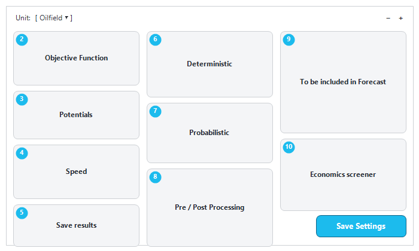

|
Settings
1. Overview
The "Settings" window holds the options that control how the forecast of a scenario is calculated: the method used to generate the well potentials, the objective of the optimiser, the time steps, what is included in the forecast, the probabilistic options, the economics and the results to save. Settings are stored per scenario, so two scenarios can use different settings and be compared.
1.Select the scenario on the main window.
2.Click "Settings" in the "Forecast" group of the main ribbon.
3.Change the options, then click "Save Settings" (or press Ctrl+S). Precept confirms "New Settings saved ! ", closes the window and refreshes the main window.
If your account cannot edit this asset, "Save Settings" is disabled.

Layout of the "Settings" window and the role of each box.
At the top of the window, "Unit:" selects the unit system of the scenario: "Oilfield" or "Metric". The "+" and "-" buttons at the top right make the background of the Precept windows lighter or darker for this asset.
2. Objective Function
Precept solves the network at every time step with a linear optimiser. When process constraints are hit, some wells are choked back or shut in. Which wells depend on the objective function. For example, on an oil field limited by gas handling, with the objective to maximise oil, the wells with the highest GOR are choked back first when the gas constraint is reached.
Build the objective in the "Objective Function" box:
1.In "Max:", select the fluid: "Liquid", "Oil", "Water", "Gas", "Total Gas", "Water Injection", "Gas Injection" or "Net cash flow".
2.In "at", select the node where this fluid is maximised (for example the export node).
3.Click "Add". The terms are added to the "obj function:" text. Repeat to combine several terms.
"Net cash flow" maximises the cash flow of the asset instead of a rate; it ticks "Calculate Economics" automatically (see Economical screener). The objective function is usually set up by Cleverfield during the initial modelling. To change it, you can contact Cleverfield support (support@cleverfield.fr).
2.1 Choke opening per well type
Three drop-downs, "Producers:", "Water Injectors:" and "Gas Injectors:", set how the optimiser chokes the wells of each type when a constraint is hit:
•"Optimize each well individually": each well gets its own choke opening (default for producers);
•"Equal choke opening within each reservoir": all wells of the same reservoir get the same opening, from 0 to 100 % (default for injectors);
•"Equal choke opening across the whole asset": all wells of that type get the same opening.
Equal openings are mainly for green fields, where all wells of a reservoir have the same decline profile.
2.2 Maintain voidage
When "Play with injection to keep VRR =1 per reservoir" is ticked, Precept chokes back the water and gas injectors that have spare injection potential, to keep a Voidage Replacement Ratio (VRR = injection in reservoir barrels / production in reservoir barrels) of 1 per reservoir. When it is not ticked, injectors are not choked back by Precept (as long as enough fluid is available for injection), which can lead to a VRR above 1.
3. Potentials
3.1 Forecast method
The drop-down at the top of the "Potentials" box sets how the well potentials (unconstrained deliverability at every time step) are generated:
•"Decline curves": from the decline curves of each well, see Decline curves: Production and Injection potentials.
•"Material Balance": from reservoir tanks, inflow (IPR) and lift curves (VLP), see Material Balance.
•"Simulation": the network forecast runs with a reservoir simulator in the loop, see Simulation coupling. It needs a deterministic run, oilfield units and a simulation deck built with the 3D model builder.
The method changes the constraint types offered in "Constraints vs time" (see Constraints changes vs time).
3.2 Forecast domain
The second drop-down offers "Forecast in Cum domain" (default) and "Forecast viewer".
•"Forecast in Cum domain": the normal forecast. New wells start when their opportunity is executed in the sequence, incremental profiles are applied, and the economic cut-offs below are used.
•"Forecast viewer": the start dates come from the potential profiles themselves; no incremental profiles and no cut-offs are applied. Selecting it un-ticks "Surface Constraints", "Uptime" and "Play with injection to keep VRR =1 per reservoir", and sets "Producers:" to "Optimize each well individually".
3.3 Other options
|
Option
|
Meaning
|
|
"use actual production until today"
|
Shown only when the asset has a daily allocation database. Adds daily time steps from the forecast start until today and uses the actual production for that period.
|
|
"use Grouped wells"
|
For wells modelled as a group (node name containing "Group"). Ticked: the group wells are used and the individual wells of the same reservoir, project and destination are shut for the whole forecast. Not ticked: the group wells are shut.
|
|
"1 mscf = ... boe"
|
Gas to barrel-of-oil-equivalent conversion factor (default 0.172).
|
|
"Field uptime (fraction) :"
|
Field uptime, from 0 to 1. See section 6.
|
|
"Close wells when water-cut greater than: " (%)
|
Economic cut-off: an oil producer whose potential water-cut is above this value is closed ("Well not economical").
|
|
"Close Oil wells when Oil rate is less than : "
|
Economic cut-off on the oil potential (stb/d or sm3/d).
|
|
"Close Gas wells when Gas rate is less than : "
|
Economic cut-off on the gas potential, in the asset's gas unit.
|
|
"Apply same potentials to all wells from same reservoir (explo)"
|
When ticked, saving a decline profile in "Decline Curves" copies it to the other wells of the same reservoir. Use it for green fields and exploration only.
|
The cut-offs are applied only with "Forecast in Cum domain".
4. To be included in Forecast (what-if scenarios)
This box switches parts of the model on or off without deleting any input:
•The project grid lists every project of the scenario. Set "To be included in Forecast" to "No" to run the forecast without that project (its opportunities, new profiles, shutdowns and constraint changes). Click the "Color" cell to pick the colour of the project on the timeline.
•"Surface Constraints": un-tick it to run an unconstrained forecast (no process constraints).
•"Uptime": un-tick it to run a forecast without uptime (field, manifold and well uptimes are ignored).
•"Model Lifting Export": models the export liftings of storage nodes and shows the "Export" button on the main ribbon.
5. Speed (time steps and optional calculations)
By default, Precept adds a time step whenever an event changes the forecast: a new well comes online, a well is converted (producer to injector or the reverse), a shutdown starts or ends, or a constraint changes. Between events, a time step is created at least every month or quarter, depending on the drop-down ("Monthly" or "Quarterly", "timestep as default"). During the first two months of the forecast, extra time steps are added on the 5th, 10th, 15th, 20th, 25th and 30th of each month.
|
Option
|
Meaning
|
|
"Daily time step"
|
One time step per day. Only for forecasts of 180 days or less; otherwise Precept stops with a message.
|
|
"Yearty Time step after:"
|
A year (for example 2035). From 1 January of that year, the default time step becomes yearly. Yearly steps make long forecasts faster.
|
|
"Calculate future losses"
|
Also calculates the future losses (shortfalls) per project, shown in the results (see Forecast results: Charts).
|
|
"Capture transient production"
|
After a shutdown, a producer restarts at a higher rate and an injector at a lower rate, during the bean-up. Adds time steps (every 5 days), so use it for short-term forecasts. See Transient.
|
|
"GHG emission"
|
Calculates the GHG emissions from the GHG inputs. See GHG emission.
|
|
"Voidage"
|
Calculates production and injection per pattern at reservoir conditions, from the PVT data and the Patterns. Ticking it also ticks "Save Patterns results". It is always ticked when the window opens.
|
6. Uptime
Uptime can be set at three levels:
•Field: "Field uptime (fraction) :" in this window. It can change over time with "Node" = "Field" in "Constraints vs time".
•Manifold: the node directly downstream of a producer, or directly upstream of an injector, set in "Constraints vs time".
•Well: set in "Constraints vs time".
At every time step: total uptime of a well = Field uptime × Manifold uptime × Well uptime, and production = choke opening × potential, with choke opening ≤ total uptime. After the optimiser has solved the network, the choke opening can be lower than the total uptime if the well is constrained, and 0 if a node downstream is closed. See Constraints changes vs time.
7. Probabilistic and Deterministic
•"Probabilistic" box: "Number of runs:" is the number of runs of a probabilistic forecast (default 50). The "Low", "Mid" and "High" boxes (default 10 / 80 / 10) are not used by the current probabilistic engine. See Probabilistic forecast.
•"Deterministic" box: "Run Sigma Low case", "Run Sigma Mid case" or "Run Sigma High case" selects which potential case (Low, Mid or High profiles) a deterministic forecast uses.
8. Save results
To save time and database space, only the selected results are saved: "Save Wells results", "Save Nodes results", "Save Field results", "Save Patterns results", and "Save pipe" (shown only when "Pre/Post processor for GAP" is ticked).
9. Economics screener
"Calculate Economics" switches on the economics. "Value at start of forecast" holds "Initial Oil price (USD/bbl):", "Initial Gas price (USD/mscf/d):", "Hydrocarbon Price yearly Inflation (%):", "General yearly inflation (%):" and "Initial CAPEX (USD):". See Economical screener.
10. Pre / Post Processing
•"Pre/Post processor for GAP": shows the "GAP" group on the main ribbon and adds GAP-specific constraint types.
•"3D Simulation model": shows the "3D Modelling" group on the main ribbon. The drop-down next to it selects the simulator the deck is written for: "ECLIPSE 100" (default), "ECLIPSE 300" or "Intersect IX". See Simulation coupling.
|